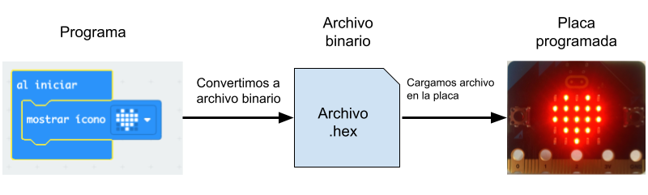

Es un material muy abundante que puede comportarse como un conductor o aislante de la corriente eléctrica. Se utiliza en la industria electrónica y microelectrónica, para fabricar componentes.
Ejemplo
La mayoría de los componentes electrónicos están hechos de silicio.
RAM
Definición
RAM acrónimo de Random Access Memory o Memoria de Acceso Aleatorio. Es la memoria principal de un dispositivo, es donde se almacenan de forma temporal los datos de los programas que se están utilizando en ese momento.
Ejemplo
La memoria RAM almacena la información de los sensores.
En este apartado vamos a aprender cómo es y cómo funciona el cerebro de nuestraplaca robótica.
Seguro que mucha de la información que vas a ver a continuación será nueva para ti, por lo que puede ser normal que a veces no entiendas algo. Si esto pasa, no te desanimes y pregúntale al profesor o a la profesora. También puedes ir apuntando en tu cuaderno algunas de las ideas importantes que vayas trabajando para que no se te olviden. No hace falta escribirlo todo, solo lo más importante.
¡Ánimo! ¡Merecerá la pena!
1. ¿Qué tienen en común estos aparatos?
En pareja revisa las siguientes imágenes y piensa que dispositivo tecnológico tienen en común todos estos aparatos.
Robot
Radio
Ratón
Microondas
Reloj
Aspiradora
Mandos de videojuego
Impresora 3D
Lumen dice ¿Necesitas una pista?
¿Quieres saber qué tienen en común?
Todos estos aparatos tienen en común que incorporan un microcontrolador como "cerebro".
El microcontrolador controla las funciones que realiza el aparato. Hoy en día la gran mayoría de aparatos que nos rodean funcionan con un microcontrolador. Nuestra placa robótica también tiene "un cerebro", un microcontrolador. Ya lo identificamos en el ejercicio anterior.
2. Identifica el microcontrolador
Coge nuestra placa robótica e intenta identificar cuál es el microcontrolador.
Lumen dice ¿Necesitas ayuda para identificar el microcontrolador?
3. Pero… ¿Qué conoces sobre los microcontroladores?
En pareja o por equipos realiza un debate en clase sobre las siguientes cuestiones:
¿Sabes por qué son tan importantes los microcontroladores en la sociedad actual?
¿Cómo crees que se fabrican? ¿De qué material crees que está hecho?
¿Sabes lo que ocurre en su interior? ¿Cómo funciona?
¿Sabes cuál es el origen de la palabra microcontrolador?
¿Sabes cuál es la diferencia entre un microcontrolador y un microprocesador?
¿Cómo le doy las órdenes?
¿Qué tamaño tienen?
¿Cuánto cuestan?
¿Cómo se han desarrollado a lo largo de la historia?
¿Cuáles son sus ventajas respecto a otros sistemas?
Nuestra placa es de código abierto, ¿Sabes que significa?
4. Qué es un microcontrolador
Qué son
Como hemos visto, un microcontrolador es el cerebro de la mayoría de los aparatos y robots que nos rodean.
Un microcontrolador es un circuito integrado que consta de un microprocesador rodeado de las memorias de programa, RAM, circuitos de entrada y salida para comunicarse y/o controlar periféricos.
Un microprocesador es un circuito integrado programable capaz de ejecutar las instrucciones del programa grabado en su memoria.
Un circuito integrado es un chip (pastilla) de silicio que contiene millones de circuitos en su interior.
Cómo funcionan
Los circuitos que contienen son capaces de realizar operaciones a gran velocidad.
Un ejemplo de las operaciones que realizan son: cálculos matemáticos (sumar, restar, multiplicar), comparar datos, leer las entradas, activar salidas…
Los microprocesadores son capaces de realizar millones de operaciones por segundo. El que lleva nuestra placa robótica puede realizar 16 millones de tareas por segundo.
Las tareas que realiza el microcontrolador las escribimos mediante un programa, que se convierte a formato binario para cargarse en el microcontrolador.
Un archivo binario está formado por unos y por ceros que es el lenguaje que entienden el microcontrolador que es un sistema digital.
En nuestro caso escribimos las órdenes en nuestro entorno de programación, mediante bloques, al guardarlo lo convertimos a un archivo codificado en binario .hex (que contiene las instrucciones de programación en el lenguaje del microcontrolador) que cargamos en la placa.
Ventajas
Resumiendo, las ventajas que aportan los microcontroladores son:
Fácilmente programables con lenguajes de programación de alto nivel. Un lenguaje de programación de alto nivel, es similar al lenguaje humano, por lo que es “fácilmente” comprensible.
Muy flexibles: es decir, sirven casi para cualquier propósito: así podemos encontrarlo en una radio, un reloj, un microondas, frigorífico, un teclado...
Pequeños: por lo que pueden ir integrados en todo tipo de aparatos desde una tarjeta de crédito a naves espaciales...
Muy económicos: los más sencillos podemos encontrarlos por céntimos de euro.
Rápidos: pueden realizar millones de tareas por segundo.
Vídeo
Definición:
Es un material muy abundante que puede comportarse como un conductor o aislante de la corriente eléctrica. Se utiliza en la industria electrónica y microelectrónica, para fabricar componentes.
Ejemplo:
La mayoría de los componentes electrónicos están hechos de silicio.
Definición:
RAM acrónimo de Random Access Memory o Memoria de Acceso Aleatorio. Es la memoria principal de un dispositivo, es donde se almacenan de forma temporal los datos de los programas que se están utilizando en ese momento.
Ejemplo:
La memoria RAM almacena la información de los sensores.
Lectura facilitada
¿Qué es un microcontrolador?
Un microcontrolador es una pequeña pieza que sirve para controlar los aparatos y robots.
Así es por dentro:
Así es por fuera:
El microcontrolador es un circuito que tiene las siguientes partes:
Microprocesador rodeado de las memorias de programa.
El formato binario es el lenguaje que comprende el microcontrolador y tiene ceros y unos. Por ejemplo: 001.

¿Cuáles son las ventajas de los microcontroladores?
Lo bueno de los microcontroladores es que:
Se programan muy fácil.
Sirven para muchas cosas.
Son pequeños.
Son baratos.
Son rápidos.
Definición:
Es la memoria principal de un dispositivo.
Ejemplo:
La memoria RAM almacena la información de los sensores.
Definición:
Elemento que lleva información a un sistema informático.
Ejemplo:
El ratón y el teclado son entradas de un ordenador.
Definición:
Elemento que muestra la información en un sistema informático.
Ejemplo:
La pantalla es un componente de salida en un ordenador.
Definición:
Es un programa que permite escribir código y transformarlo en una aplicación informática.
Ejemplo:
Python es un entorno de programación.
Definición:
Dar instrucciones a una máquina o aparato para que realice funciones.
Ejemplo:
Vamos a programar el robot.
Kardia dice ¿Quieres saber más sobre los microcontroladores?
¿Sabes la importancia de los microcontroladores en la sociedad actual?
Los microprocesadores y microcontroladores son el cerebro de las máquinas que nos rodean. Una de las principales razones de la evolución tecnológica de los últimos años se debe a la capacidad de hacerlos cada vez más pequeños. Esto implica que sean más rápidos y puedan contener más circuitos que realicen funciones más complejas.
¿Sabes cuál es el origen del término microprocesador?
Hasta los años 70 los procesadores (ordenadores) eran muy voluminosos, llegando a ocupar habitaciones enteras.
La primera vez que se consiguió realizar un procesador completo integrado en un chip se le denominó “microprocesador”. Fue el Intel 4004 en 1971.
El primer microprocesador contenía 2500 componentes en su interior, en la actualidad contienen más de 15 mil millones de componentes.
Esta capacidad de incluir circuitos cada vez más pequeños es uno de los avances tecnológicos fundamentales de los últimos años.
Mientras más pequeños son los circuitos, más rápidos son los microprocesadores (las señales tardan menos en viajar) y menos potencia consumen.
¿Sabes cuál es la diferencia entre un microprocesador y un microcontrolador?
Los ordenadores y teléfonos móviles llevan en su interior un microprocesador, estos son muy potentes pero necesitan otros elementos para poder funcionar, como son memorias, el reloj, convertidor analógico digital, entre otros.
Los microcontroladores, como el que lleva nuestra placa robótica, son menos potentes que los microprocesadores que lleva un teléfono o un ordenador, pero incorporan todos los elementos necesarios para funcionar de forma autónoma.
Para que nos hagamos una idea un microprocesador moderno es capaz de realizar 3000 millones de tareas por segundo mientras que el microcontrolador de nuestra placa realiza 16 millones de tareas por segundo. Suficiente para los usos que vamos a darles.
¿Sabes que nuestra placa robótica es de código abierto? ¿sabes qué significa?
Micro:bit es de código abierto, o como se denomina cuando hablamos de un circuito: Open Source Hardware. Esto significa que los circuitos que llevan conectados a las entradas y salidas del microcontrolador están publicados y con licencia para estudiarlos, replicarlos o modificarlos.
En este repositorio podemos encontrar toda la información necesaria para poder estudiar, o replicar el proyecto.
¿Qué otros proyectos Open Source conoces? ¿Conoces el proyecto RepRap?
¿Qué ventajas crees que aportan a los usuarios los proyectos Open Source?
¿Qué ventajas crees que aporta al proyecto que muchas personas puedan participar?
¿Sabes cómo se fabrican los circuitos integrados y cuál es su historia?
5. Te ayudo a planificar el siguiente ejercicio
Para llegar a una meta, es conveniente que seas un buen o buena estratega. Es decir, tener estrategias, técnicas, “trucos” para llegar antes o de forma más fácil donde tú quieres.
Ahora te voy a enseñar una estrategia, ¡Aprovéchala para alcanzar tu reto!
¿Quieres que te enseñe "trucos" para realizar un esquema.
Tómate el tiempo que necesites para realizarlo y recuerda que siempre podemos preguntarle al docente o a algún compañero o compañera cuando no entiendas algo.
¡Ánimo, que lo harás genial!
6. Completa el esquema
En pareja, a partir de la información suministrada en la lectura "4. Qué es un microcontrolador", completa el siguiente esquema, y comenta con tu compañero o compañera las conclusiones que se extraen de él.
Motus dice ¿Te has dado cuenta de la cantidad de cosas que has tenido que hacer para completar la actividad?
Al realizar esta actividad has tenido que poner en juego todo lo que sabes. A veces para aprender tenemos que trabajar de forma constante. Cuando nos esforzamos mucho nuestro trabajo es valorado por nuestros profes y familiares. Pero lo más importante es que nos sentimos muy contentos por el trabajo realizado.
Te animo a que sigas trabajando para que puedas aprender y seguir mejorando.


 En este apartado vamos a aprender cómo es y cómo funciona el cerebro de nuestra placa robótica.
En este apartado vamos a aprender cómo es y cómo funciona el cerebro de nuestra placa robótica.


 Definición:
Definición: Definición:
Definición: Definición:
Definición: